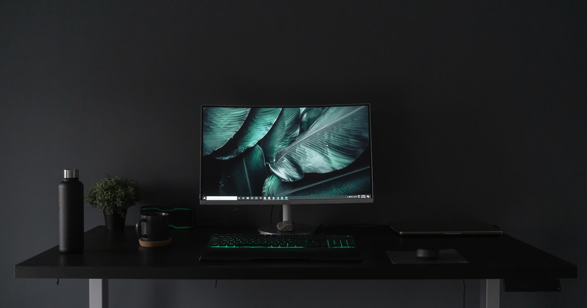

Der richtige Monitor fürs Home-Office: 24″, 27″ oder Ultrawide?

Foto: Unsplash
Den ganzen Tag am Laptop-Display arbeiten heißt: gebeugter Nacken, kleine Schrift, ständiges Fenster-Jonglieren. Ein externer Monitor ist das Upgrade mit dem größten Alltagseffekt im Home-Office – diese Kaufberatung vergleicht die drei sinnvollen Größenklassen und erklärt, welche Anschlüsse und Ergonomie-Features wirklich zählen.
Die drei Klassen im Überblick
| Klasse | Auflösung | Für wen | Preis |
|---|---|---|---|
| 24 Zoll | Full HD (1920×1080) | Kleine Schreibtische, Office-Basics, knappes Budget | ca. 100–160 € |
| 27 Zoll Empfehlung | WQHD (2560×1440) | Der Allrounder – viel Fläche, scharfe Schrift | ca. 180–300 € |
| Ultrawide 34″ | UWQHD (3440×1440) | Multitasking, ersetzt Dual-Monitor-Setup | ca. 280–500 € |
24 Zoll Full HD
ca. 100–160 €Für E-Mails, Textverarbeitung und Video-Calls reicht ein 24-Zöller völlig – und er passt auch auf schmale Schreibtische. Die Grenze: Bei zwei Fenstern nebeneinander wird es eng, und Full HD auf 24 Zoll ist okay, aber nicht gestochen scharf.
Stärken
- Günstig und platzsparend – ideal fürs kleine Home-Office
- Große Auswahl an Modellen mit Höhenverstellung
Schwächen
- Begrenzte Arbeitsfläche für Multitasking
* Affiliate-Link
27 Zoll WQHD
ca. 180–300 € Unsere EmpfehlungDie Kombination aus 27 Zoll und WQHD-Auflösung ist der Sweet Spot fürs Home-Office: deutlich mehr Arbeitsfläche als Full HD, gestochen scharfe Schrift und genug Platz für zwei Dokumente nebeneinander. Wichtig: 27 Zoll mit nur Full HD wirkt pixelig – auf WQHD achten.
Stärken
- Bestes Verhältnis aus Arbeitsfläche, Schärfe und Preis
- Zwei Fenster nebeneinander komfortabel nutzbar
Schwächen
- Braucht etwas mehr Schreibtischtiefe (Sitzabstand)
* Affiliate-Link
Ultrawide 34 Zoll
ca. 280–500 €Ein 34-Zoll-Ultrawide ersetzt zwei Monitore ohne störende Rahmenkante in der Mitte: links das Dokument, rechts Recherche oder Call. Für Tabellenarbeit, Programmierung und alle, die ständig zwischen Fenstern wechseln, ein echter Produktivitätssprung – vorausgesetzt, der Schreibtisch ist mindestens 80 cm breit und stabil genug.
Stärken
- Zwei volle Arbeitsbereiche ohne Monitorwechsel oder Rahmen
- Ein Kabel, ein Netzteil – aufgeräumter als zwei Einzelmonitore
Schwächen
- Höchster Preis und größter Platzbedarf
- Fensterteilung erfordert kurze Eingewöhnung
* Affiliate-Link
Wichtiger als die Größe: diese Features
- Höhenverstellbarer Standfuß: Oberkante auf Augenhöhe ist die Grundregel gegen Nackenschmerzen
- USB-C mit Power Delivery: ein Kabel lädt den Laptop und überträgt das Bild – der größte Komfortgewinn für Laptop-Nutzer
- Matte Beschichtung: spiegelnde Displays sind am Fenster-Arbeitsplatz ein Dauerärgernis
- Augenschonung: Flicker-Free und Blaulichtfilter sind bei langen Tagen spürbar
- Hertz-Zahlen ignorieren: 144 Hz+ ist ein Gaming-Feature – fürs Office zählen Auflösung und Ergonomie
Häufige Fragen
Welche Monitorgröße ist die beste fürs Home-Office?
Für die meisten ist 27 Zoll mit WQHD-Auflösung der Sweet Spot: deutlich mehr Arbeitsfläche als Full HD, scharfe Schrift und Platz für zwei Dokumente nebeneinander. 24 Zoll passt auf kleine Schreibtische, Ultrawide ersetzt ein Dual-Monitor-Setup.
Warum ist USB-C beim Monitor wichtig?
Ein Monitor mit USB-C und Power Delivery lädt den Laptop über dasselbe Kabel, das auch das Bild überträgt – ein Kabel statt drei. Für Laptop-Nutzer der größte Komfortgewinn beim Monitorkauf.
Brauche ich 144 Hz für Büroarbeit?
Nein. Hohe Bildwiederholraten sind ein Gaming-Feature. Für Office-Arbeit zählen Auflösung, ein höhenverstellbarer Standfuß, eine matte Beschichtung und Augenschon-Features wie Flicker-Free.
Fazit
Für die meisten ist ein 27-Zoll-WQHD-Monitor mit höhenverstellbarem Fuß und USB-C die beste Wahl – genug Fläche, scharfe Schrift, ein Kabel. Der 24-Zöller bleibt die richtige Option für kleine Schreibtische und kleines Budget, das Ultrawide für alle, die ohnehin über zwei Monitore nachdenken.